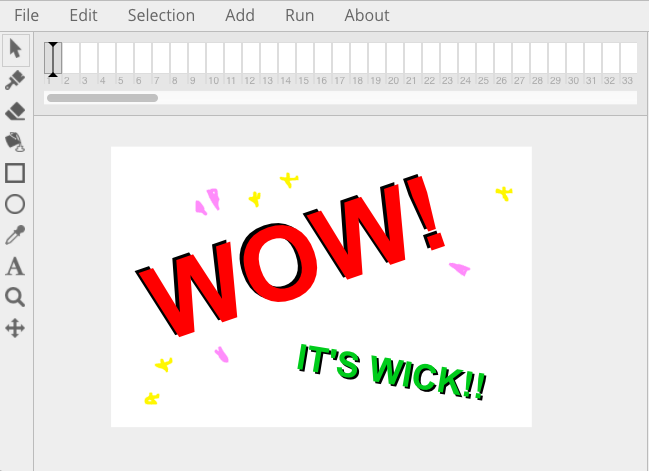

About
What's Wick?
Wick is a free and open source browser-based tool for making interactive things for the Internet. Wick aims to make web technologies more accessible by doing the heavy lifting for you.
The Wick Editor is a full-featured creative suite with a timeline system, tweens, drawing tools, cross-browser player, code editor, and much more. Since Wick lives in the browser, you don't have to download any extra software to use it!

Why Wick?
Although there are tons of new things the modern web browser can do, it's very diffcult to start making creative projects without programming knowledge or experience as a web developer.
Third party plugins and players like Flash have been phased out for open standards such as the HTML5 canvas, WebGL, WebAudio, etc. These technologies have many advantages, but are very difficult to use! Wick is the best of both worlds: modern web tech with an easy-to-use editor! Also, it's completely free, and there are no downloads required!
Who Are We?
Wick Editor is created by
Zach Rispoli and
Luca Damasco. New to the team is
Bryce Summers, an Algorithms Designer helping to develop the system essential to Wick's vector drawing system.